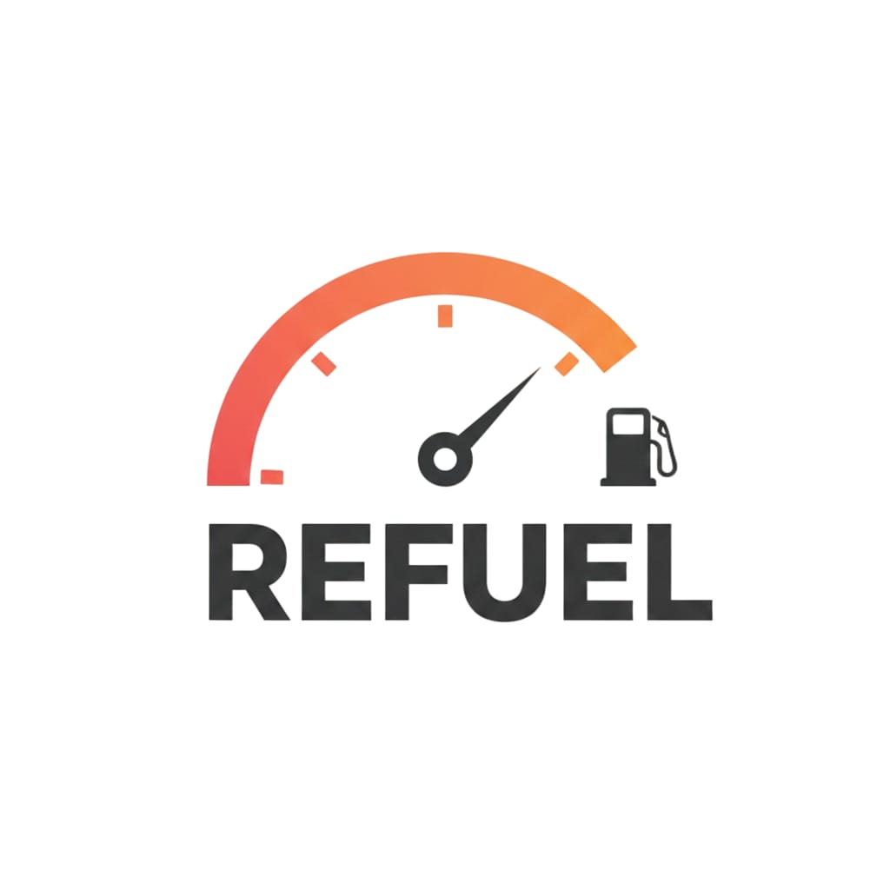
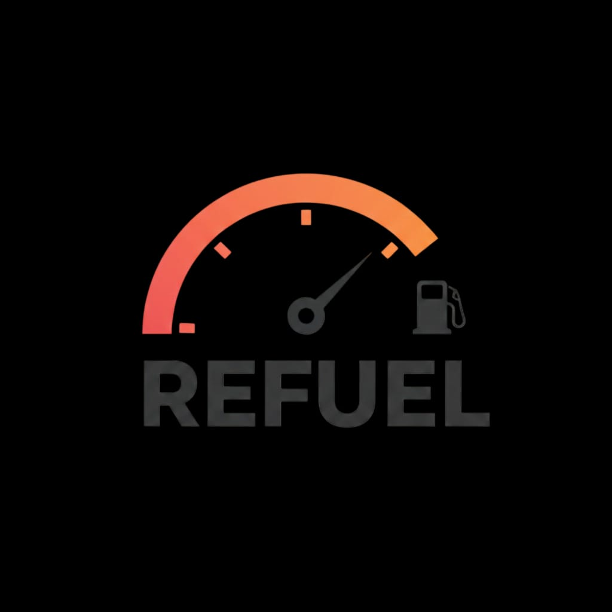

Real-time discovery of petrol, diesel, CNG, and EV charging stations — powered by live crowd data, community-verified availability, and a network of over 44,000 stations across India.
GPS-driven crowd tracking that counts real vehicles at each station using a 50-metre entry geofence, 30-second heartbeats, and community intent signals — no cameras, no guesswork.
A quality-weighted formula combines the current vehicle count with the average dwell time from the last 50 confirmed visits, so you know the wait before you arrive.
Stations are filtered and ranked by your primary vehicle's fuel type, live crowd level, and estimated wait — so the fastest option is always on top.
One unified app covering every fuel type in India — aggregated from official APIs, OpenStreetMap, Open Charge Map, e-Amrit, and community contributions.
Spotted a station that isn't on the map? Submit it in seconds with fuel-type flags and photos — your contribution appears in the live feed for everyone nearby.
A background GPS service uses low-energy pings and a 50-metre geofence to sense your position near every station — without draining your battery.
Refuel merges over 44,000 verified stations from official APIs, OpenStreetMap, Open Charge Map, e-Amrit, and user contributions — filtered to match your vehicle.
Every device confirms intent through a short popup. Refuel tallies real vehicles, weighs recent dwell times, and updates each station's crowd level in real time.
Refuel picks the best station by combining crowd level, estimated wait time, and distance — not just proximity — so you skip the queue every time.
A clean, distraction-free interface with animated 3D vehicle markers, colour-coded crowd badges, and support for five Indian languages.